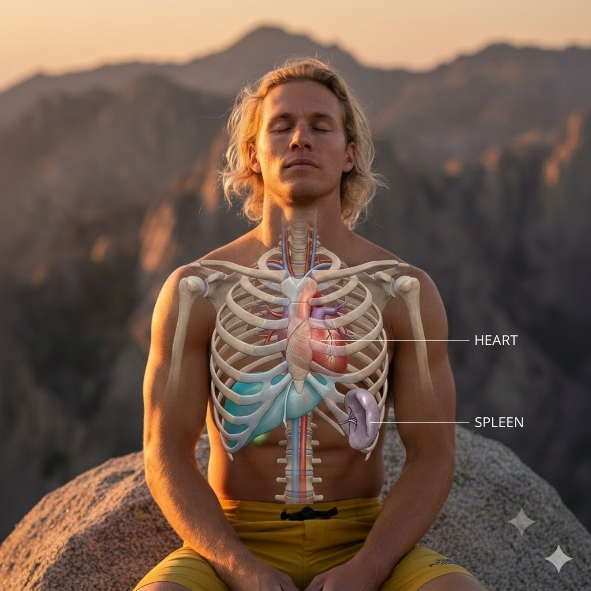

🫁 Could Splenic Contraction Occur During Hard Climbing?
Breath holding can interrupt ventilation and may be followed by compensatory breathing. In the Pranaclimb field model, observable breath holds are therefore recorded separately and may contribute to Effective BR and estimated W′bal cost. These are operational modelling choices, not direct measurements of oxygen transport or splenic function. Laboratory research also shows that repeated maximal apnoeas can contract the spleen, but a performance benefit from strategic breath holding in climbing has not been demonstrated.
"I'd hyperventilate for two minutes and then I'd breathe out and hold my breath."Tim Emmett — Climbing.com interview, December 2025 · Era Vella 9a
Emmett repeated that cycle five times, a couple of days before his send, holding the final exhale for over four minutes. He also credited cold water immersion for aiding his recovery through the eight-year project.
Tim's four-minute exhale hold shows exceptional breath-hold ability and an important personal relationship with breathwork. Because he performed the exercise a couple of days before the ascent, its relevance is more likely to lie in longer-term adaptation, breathing familiarity, composure and preparation than in a short-lived rise in circulating haemoglobin. His experience offers a valuable elite-climbing observation from which future research questions can develop.
The relevant mechanism is the spleen's capacity to act as a dynamic reservoir of erythrocytes. During sufficiently strong physiological stimuli, splenic contraction can add red blood cells to the circulation and contribute to a transient increase in haemoglobin concentration. Research supports this response during repeated maximal apnoeas, hypoxia and sustained exercise, providing a strong foundation for investigating its size, timing and functional importance during a climbing crux. Within Pranaclimb, spleen physiology is treated as an emerging hypothesis alongside—not as a measured component of—the current RBA.
🩸 The Spleen as a Dynamic Red-Blood-Cell Reservoir
The human spleen contains a concentrated reserve of red blood cells and can reduce its volume under physiological stress. Human spleen size varies considerably between individuals. In the studies reviewed here, mean resting volumes ranged from approximately 157 ml in untrained controls to 214 ml in elite biathletes, while well-trained cross-country skiers averaged 266 ml. These ultrasound-derived organ volumes should not be presented as equivalent to a fixed volume of releasable blood.
💧 What the Spleen Stores
A variable reserve of erythrocyte-rich blood. Baseline organ volume and the absolute volume expelled differ substantially between people.
⚡ What Triggers Release
Apnoea, hypoxia, exercise and sympathetic activation can all contribute. Hypoxaemia, hypercapnia, exercise intensity and baroreceptor unloading may influence the response.
Splenic contraction can begin quickly, although its size and time course depend heavily on the protocol. In seven trained divers, Palada et al. (2007) detected an approximately 20% reduction in spleen volume within the first three seconds of a near-maximal-inspiration apnoea; lower starting lung volumes produced smaller changes. This controlled resting experiment demonstrates the speed of the response and provides a useful physiological benchmark for future on-wall measurements. Schagatay et al. (2005) mapped the progressive contraction and recovery produced by repeated apnoeas. Recovery is protocol-dependent: one classic repeated-apnoea study found haemoglobin concentration back at baseline after about 10 minutes, while other experiments observed slower recovery of spleen volume.
Breath holding and the diving response
Breath holding can elicit the human diving response, although its magnitude varies between individuals and protocols. Typical components include bradycardia, peripheral vasoconstriction, redistribution of blood towards oxygen-sensitive organs and an increase in arterial blood pressure. Cooling the face—particularly around trigeminally innervated areas—can intensify parts of the cardiovascular response, while its additional effect on splenic contraction appears to depend on the protocol (Foster & Sheel, 2005).
The spleen contributes to this broader oxygen-conservation response. Baković et al. (2005) reported that the human spleen can contain approximately 200–250 mL of densely packed blood and may expel up to around half of it during sufficiently demanding exercise or repeated apnoea. This supports an estimated release approaching 100 mL under some conditions, providing a temporary increase in circulating red-cell volume and oxygen-carrying capacity.
📊 What the Research Actually Shows
| Condition studied | Splenic response | Haemoglobin response | What can be concluded |
|---|---|---|---|
| Short apnoeas at rest in trained divers Palada et al., 2007 | Approximately 20% reduction within the first 3 s during near-maximal-inspiration apnoea | Not measured as an outcome | Splenic contraction can begin rapidly, but this small study used trained divers, controlled lung volumes and a cold forehead stimulus—not climbing. |
| Dynamic apnoea during cycling Dotevall et al., 2026 | Compared with normal-breathing exercise, spleen volume was 6.4% lower during dynamic apnoea and 13.3% lower when facial cooling was added; dynamic apnoea alone was not significantly below the resting baseline | Not the principal reported comparison | Apnoea can shift the response to exercise towards a diving-response pattern, especially with facial cooling, providing relevant mechanistic evidence for dynamic effort. |
| Repeated maximal static and dynamic apnoeas in water Elia et al., 2021 | Both protocols produced contraction; dynamic apnoea produced the larger response only in elite breath-hold divers | Increased after dynamic, but not static, apnoea | Both static and dynamic apnoea can stimulate splenic contraction, while the associated haemoglobin response varies with the activity and population. |
| Repeated maximal apnoeas without deliberate pre-hold hyperventilation Lindblom et al., 2024 | 20.4% reduction in spleen volume | 3.3% increase | A transient haematological response occurred in trained skiers; performance was not tested. |
| Maximal roller-ski exercise Lindblom et al., 2024 | 35.8% reduction | 8.1% increase | The response was greater at maximal intensity, but reduced plasma volume also influenced [Hb]. |
| Exercise in simulated altitude Lodin-Sundström et al., 2021 | 22% reduction during rest in simulated 3,500 m hypoxia and 33% during exercise in hypoxia | 5.3% increase during hypoxic exercise | Hypoxia and exercise produced a graded response in this laboratory protocol. It does not show that an added breath hold would increase the response further. |
| Maximal exercise at 4,300 m Brutsaert et al., 2024 | Sherpa: 91 mL reduction; Nepali non-Sherpa: 38 mL reduction | Increased by 1.2–1.4 g/dL; calculated arterial oxygen content remained stable | Supports an exercise-responsive splenic reserve at altitude and a larger response in Sherpa, while the direct link with hypoxia tolerance remains unresolved. |
| Four maximal apnoeas before a 4-km cycling time trial Sperlich et al., 2015 | 12.4% reduction after the fourth apnoea | No meaningful difference from the control condition | Average power did not improve significantly. The sample was only seven cyclists, so this is evidence of no detected benefit—not proof that an effect is impossible. |
| Ten minutes of severe eupnoeic hypoxia Pernett et al., 2021 | 21% reduction by 3 min; 28% by 10 min | 2.9% increase after 10 min | The spleen responds rapidly to severe hypoxia even while breathing continues normally. |
| Head-up tilt and cold-pressor stress Lodin-Sundström et al., 2026 | 5.3% and 6.6% reductions | Not the primary outcome reported here | Splenic contraction can accompany baroreceptor unloading and sympathoexcitation without apnoea. |
| Rock climbing | Not directly measured | Not directly measured | Direct on-wall measurement is the next step needed to test the physiologically plausible climbing application. |
What appears to trigger the response?
No single trigger explains every finding. Hypoxaemia, respiratory arrest, exercise intensity and sympathetic or baroreflex influences may all contribute. Lodin-Sundström and Schagatay (2010) found that a two-minute apnoea caused a larger contraction than 20 minutes of normobaric hypoxia at a similar arterial oxygen saturation. Persson et al. (2023) also observed a larger mean contraction during apnoea than during rebreathing, although the small sample and variable responses limit certainty about the between-condition difference. Together, these studies suggest that falling oxygen is important but is not the whole mechanism.
Pernett et al. (2021) isolated the hypoxic stimulus by allowing 15 healthy adults to continue breathing normally while they inhaled 10% oxygen—equivalent to approximately 5,793 m altitude—for ten minutes. Mean spleen volume had fallen by 21% after three minutes and 28% after ten minutes, while haemoglobin concentration rose by 2.9%. The response was highly individual and reversed during recovery with supplemental oxygen. This demonstrates that severe acute hypoxia can recruit the splenic red-cell reservoir even without a breath hold.
Exercise and environmental hypoxia can also interact. At simulated 3,500 m altitude, Lodin-Sundström et al. (2021) observed a 22% reduction in spleen volume during resting hypoxia and a 33% reduction when exercise was superimposed, with haemoglobin concentration increasing by 5.3% during hypoxic exercise. In the field, Schagatay et al. (2020) found that the spleen was partly contracted at rest as altitude increased and contracted further during exercise. Purdy et al. (2019) likewise reported a progressive reduction in resting spleen volume during ascent. These are altitude studies: they support a graded splenic response to combined systemic hypoxia and exercise, but they do not establish that adding an end-expiratory hold to maximal sea-level exercise produces an extra or “maximal” benefit.
The Bajau: Human Adaptation to Breath-Hold Diving
The Bajau “Sea Nomads” of Southeast Asia provide an extraordinary population-level example of human adaptation to repeated breath-hold diving. Ilardo et al. (2018) found that the median spleen size of Bajau participants was approximately 50% larger than that of the neighbouring, land-based Saluan population. Larger spleens were also present in Bajau people who did not regularly dive, pointing beyond short-term training alone.
The genomic analysis identified evidence of natural selection involving PDE10A, a gene associated with thyroid-hormone regulation and spleen size, together with selection involving BDKRB2, which is connected with the peripheral vascular response to diving. A larger spleen provides a larger potential reservoir of erythrocyte-rich blood that can be released during apnoea. The findings therefore connect breath-hold diving, hypoxia tolerance and the spleen across an evolutionary timescale.
This population-level adaptation is different from the changes produced by an individual training programme, but it reveals the biological importance of the spleen when breath holding is woven into daily life over many generations. A National Geographic account of the research describes the Bajau’s maritime culture and the fieldwork behind the discovery.
Repeated apnoea and training
Repeated maximal apnoeas can acutely raise haemoglobin concentration and extend subsequent breath-hold duration. In an experiment that included people without a spleen, Schagatay et al. (2001) found that the haemoglobin rise and delayed physiological breaking point occurred only in participants with an intact spleen. This supports a causal role for splenic contraction in the acute apnoea response and provides a physiological foundation for exploring its relevance to other sports.
Training studies also demonstrate meaningful adaptation. Two weeks of daily maximal apnoeas improved breath-hold duration in Engan et al. (2013), with earlier and more pronounced diving bradycardia. Eight weeks of static apnoea training increased resting spleen volume and breath-hold time in Bouten et al. (2019), although neither study increased the magnitude of the acute splenic contraction response.
A systematic review and meta-analysis of seven studies involving 126 participants found that 2–22 weeks of apnoea training produced a greater increase in peak blood lactate than normal-breathing training, with a mean difference of 1.89 mmol/L. V̇O₂max did not change significantly. The lactate finding suggests a possible adaptation in glycolytic capacity or tolerance and is particularly interesting for sports containing repeated high-intensity efforts, while further performance-specific research is needed (de Asís-Fernández et al., 2022).
Dynamic apnoea training provides an especially relevant bridge between resting breath holds and movement. Yang et al. (2022) studied 12 student athletes who completed breath-hold jogging and skipping five times per week for eight weeks, progressively extending the holds from 20 to 35 seconds. Mean resting spleen volume increased from 109 to 136 mL, while baseline red-cell count and haemoglobin concentration remained unchanged. Ten athletes performing the same exercise without breath holds showed no comparable change in spleen size. This small training study demonstrates structural adaptation to dry dynamic apnoea, although it did not test climbing or establish a performance benefit.
Bouten et al. (2025) bring these findings together in a current review of apnoea and exercise performance. Elia and Lemaître (2025) provide a complementary sport-focused synthesis spanning acute splenic and haemoglobin responses, breath-hold priming and longer-term training adaptations. Both reviews identify the greatest performance promise in dynamic forms of restricted-breathing training—particularly low-lung-volume hypoventilation and repeated-sprint training using short end-expiratory breath holds. At the same time, they emphasise that outcomes depend on the protocol, the hypoxaemic–hypercapnic dose, the timing relative to exercise, the existing warm-up and the demands of the sport. The transient haemoglobin increase produced by acute splenic contraction has not consistently translated into better immediate aerobic performance, and conventional apnoea training has not consistently increased haemoglobin mass or aerobic performance.
Competitive artistic swimmers provide another relevant example. Gamble and Rodríguez-Zamora (2026) observed clear splenic contraction after three maximal dry static apnoeas. Haemoglobin concentration did not increase across the group, while breath-hold duration correlated with competition score in one small subgroup. This reinforces that splenic, haematological and performance responses are related but not identical.
Spleen contraction and V̇O₂ kinetics
V̇O₂ kinetics describes how quickly oxygen uptake adjusts when exercise begins and how quickly it returns towards baseline after exercise stops. Rapid splenic emptying could theoretically increase circulating erythrocytes and support oxygen delivery at exercise onset. Current findings suggest that the relationship is more complex than a simple acceleration of pulmonary V̇O₂.
In 14 healthy men completing repeated transitions to moderate-intensity supine cycling, Zubac et al. (2022) observed an approximately 38% reduction in spleen volume and a transient rise in erythrocyte concentration. The splenic response was similar in aerobically trained and untrained participants, while its magnitude was not associated with the measured pulmonary V̇O₂ parameters in that protocol.
A subsequent study of 15 healthy adults found an approximately 35% reduction in spleen volume and a 3–4% rise in circulating red-cell concentration during moderate-intensity supine cycling. Greater splenic emptying was associated with a longer V̇O₂ recovery time constant and greater fast excess post-exercise oxygen consumption (EPOCfast) (Zubac et al., 2023). This was a correlation: it does not establish that splenic re-expansion or erythrocyte re-sequestration caused slower recovery. The experiment was also performed during supine cycling, not climbing.
🧗 Why This Matters Specifically in Climbing
Hard climbing combines intermittent muscular work, sympathetic arousal and naturally occurring breath holds—several stimuli capable of influencing spleen volume. This makes the splenic response a physiologically credible and exciting area for climbing-specific investigation.
Is the spleen likely to be involved in maximal climbing or bouldering? Probably—but this is a physiological inference, not yet a direct measurement. Maximal exercise alone produced the largest contraction in the trained-skiers study, while apnoea, hypoxaemia and sympathoexcitation can each contribute through partly overlapping pathways. A hard route or boulder therefore contains several plausible triggers. What remains unknown is the magnitude and timing of the response on rock, whether it differs between disciplines, and whether deliberately trying to intensify it improves performance.
The closest data involving climbers comes from altitude. Schagatay et al. (2020) found that Mt. Everest climbers had a larger resting spleen (367 mL) than Everest Base Camp trekkers (228 mL), together with roughly twice the splenic contraction during apnoea. The demands of high-altitude mountaineering differ from sport and trad climbing, but the findings demonstrate substantial splenic capacity in highly adapted climbers.
Lodin-Sundström et al. (2026) found significant splenic contraction during head-up tilt (5.3%), a cold-pressor test (6.6%), thigh-cuff release (11.9%) and maximal-duration apnoea (9.3%). The cold-pressor test combines cold, pain and psychophysiological stress, so it should not be labelled simply as “psychological stress”. By supporting roles for general sympathetic activation and arterial baroreceptor unloading, the findings make fear and arousal during climbing a plausible, testable hypothesis for future direct measurement.
Climbing’s energetic profile adds another reason to investigate apnoea training. In eight elite climbers completing an indoor competition, Gáspari et al. (2015) observed blood-lactate increases of 133% following the semi-final route and 191% following the more difficult final route. The study indicates substantial glycolytic involvement as climbing difficulty increased. Combined with the apnoea-training findings on peak lactate, it provides a promising rationale for direct climbing studies; whether the two responses are causally connected is an important question for that research.
Additionally, during maximal efforts climbers hold their breath for multiple reasons:
- → Valsalva-like bracing during lock-offs, dynos, and powerful moves
- → Trunk stabilisation to maintain body tension on small footholds
- → Attention, threat and bracing may occur alongside altered breathing during difficult climbing, although this relationship has not been quantified directly in climbers
- → Minimising torso movement on balance-critical sequences
One crux, four converging layers
Breath holding, Valsalva-like bracing, CO₂ tolerance and splenic contraction can converge during the same maximal climbing sequence, but they describe different parts of the response. Breath holding is the observable behaviour. Valsalva-like strain is one possible pressure-and-bracing mechanism within that hold. CO₂ tolerance influences how the climber experiences and controls rising air hunger and respiratory drive. Splenic contraction is a possible systemic response when the combined apnoeic, hypoxic, exercise or sympathetic stimulus is strong enough.
The proposed sequence is therefore: a maximal move evokes a hold; the hold may provide pressure-supported stiffness and force transfer; repeated or extended holds increase respiratory discomfort; and a sufficiently strong whole-body stimulus may also alter spleen volume and circulating erythrocytes. These layers operate on different timescales and cannot be inferred from one another without direct measurement.
Valsalva-like bracing, pressure and autonomic control
A Valsalva manoeuvre is a forceful expiratory effort against a closed airway. It does not have to begin with a maximal inhalation. In climbing, the nearest field behaviour is a brief closed-glottis strain during a lock-off, compression move, dynamic reach or other action requiring high whole-body stiffness. A visible pause in breathing alone cannot confirm a true Valsalva; direct airway- or mouth-pressure measurement is needed.
The classical cardiovascular response has four phases. At the onset of strain, increased intrathoracic pressure briefly raises arterial pressure by compressing thoracic vessels and displacing blood from the pulmonary circulation. During continued strain, systemic venous return, stroke volume and pulse pressure fall; baroreflex-mediated sympathetic activation increases heart rate and peripheral vasoconstriction. On release, arterial pressure briefly falls as intrathoracic pressure normalises. Restored venous return then enters a still-constricted circulation, producing a phase-IV pressure overshoot that activates the baroreflex and increases vagal influence, slowing heart rate. The balance and size of these responses depend on strain pressure, duration, posture, lung volume and the individual.
Callender et al. (2020) measured arterial blood pressure, heart rate and mouth pressure in six well-trained male climbers completing two indoor boulder problems and three climbing-training tasks. Bouldering produced peak pressures of 200 ± 17 mmHg systolic and 142 ± 26 mmHg diastolic, while peak mouth pressure during climbing was 31 ± 46 mmHg. These intermittent mouth-pressure changes are compatible with Valsalva-like expiratory strain, but the study did not prove that every pressure event involved a closed glottis or that the behaviour improved performance.
Ikeda et al. (2009) compared normal breathing, forced inhalation, forced exhalation and Valsalva during maximal voluntary isometric contractions. Forced exhalation increased peak force during shoulder adduction, elbow extension and knee extension, while Valsalva did not produce greater peak force than forced exhalation in the tested muscle groups. The result supports forceful exhalation as a useful movement option, but the experiment did not directly test climbing or establish that forced exhalation is risk-free.
Does Valsalva produce a larger splenic response?
Inoue et al. (2013) used magnetic-resonance imaging to measure spleen volume in 12 healthy non-divers during 30-second end-expiratory breath holding, deep-inspiration breath holding and Valsalva. Mean spleen-volume reductions were 10.2%, 10.2% and 13.3%, respectively, and the conditions did not differ significantly. Spleen volume returned to baseline within two minutes after each manipulation. The study confirms that even short respiratory manipulations can alter spleen volume, but it does not show that Valsalva provides a uniquely greater red-cell or performance benefit.
Exercise intensity, repeated apnoea, hypoxia and sympathoexcitation can all influence spleen volume—creating a strong physiological rationale for studying the response in rock climbing.— Evidence summary from the studies reviewed below
Holmström et al. (2021) found that elite biathletes had larger resting spleen volumes and larger absolute apnoea-induced contractions than untrained controls. This supports an association between endurance-athlete status and enhanced splenic capacity, although the cross-sectional design cannot separate training effects from athlete selection, genetics or other influences.
Scope note: CO₂-related field measures and breath-discomfort testing are covered separately in the Pranaclimb CO₂ guide. They do not measure splenic contraction.
🔹 What This Means for Climbers
Breath holding commonly occurs during lock-offs, dynamic moves and other high-tension climbing sequences. These naturally occurring holds can assist bracing and may also engage elements of the diving and splenic responses when the stimulus is sufficiently strong.
Laboratory research establishes that repeated apnoeas can temporarily contract the spleen and sometimes produce a small increase in circulating haemoglobin. Acute studies have not consistently found an immediate performance improvement: in seven cyclists, for example, spleen contraction occurred after repeated maximal apnoeas without improving a subsequent four-kilometre time trial (Sperlich et al., 2015). Longer-term training may offer different possibilities, particularly through adaptation to respiratory discomfort, hypoxaemia, hypercapnia and high glycolytic demand.
Tim Emmett’s experience provides a valuable elite-climbing example. His hyperventilation–retention practice formed part of his preparation for Era Vella 9a and offers a clear practitioner-led hypothesis for future research. Because the practice took place a couple of days before the ascent, any contribution would be more likely to involve longer-term physiological adaptation, breathing familiarity, composure or preparation than a short-lived increase in circulating red cells.
Practical Guidance
On the wall, a brief breath hold may assist natural bracing during a demanding move. The priority afterwards is to release the hold and resume ventilation.
🔹 Climbing cue
“Brace briefly if the move demands it—then release and breathe.”
Exploratory Pranaclimb Protocols: Sport-Route and Boulder Onsights
Pranaclimb uses a clear three-part framework: progressive breath-hold training, a familiar non-fatiguing pre-attempt primer, and brief tactical holds during movement. Each has a different purpose and dose. We develop composure, movement continuity and control under rising respiratory strain, while measuring the response and refining the climbing-specific protocol. Splenic activation is one plausible contributor within that wider performance response.
| Onsight setting | Progressive training | Before and during the attempt | Frontier and boundary |
|---|---|---|---|
| Sport route Longer, cumulative effort | Develop CO₂-related composure off-wall using four comfortable end-expiratory walking holds of approximately 15–25 steps, with full breathing recovery between rounds. On easy, familiar and securely protected climbing, brief 2–3 s holds may be explored every 5–10 breaths while breathing rhythm and movement quality remain controlled. | A previously rehearsed, non-fatiguing breathwork primer may be used before the attempt, provided normal breathing, coordination and mental clarity have fully returned. On the route, brief tactical bracing can support difficult moves; release the hold afterwards and use rests to restore ventilation. | The hypothesis is that repeated exposure may improve tolerance of respiratory discomfort and help the climber remain organised through a sustained crux. The optimal dose—and any contribution from splenic contraction—remains to be tested directly. |
| Boulder Shorter, more explosive effort | On low-risk, familiar terrain, practise a controlled 2–3-move sequence on one breath, match breath release to movement, then use approximately one minute of deep nasal recovery. Progress only while movement precision and awareness remain intact. | Use a full neuromuscular warm-up and a familiar breathing reset. During the attempt, a short breath hold may be a deliberate part of whole-body tension, commitment and motor continuity through the hardest sequence; release and recover immediately afterwards. | The hypothesis is that breath-held movement can train bracing and the ability to execute accurately under rising respiratory strain. It is not yet known whether splenic activation materially assists an individual boulder attempt. |
Implications for Breathwork and Training
- → Train the response, not just the stopwatch: progressive apnoea and hypoxic–hypercapnic practice may help climbers remain composed, coordinated and committed as respiratory discomfort rises. Whether it also enhances splenic responsiveness in climbers remains a testable hypothesis.
- → Recover deliberately after the crux: resuming effective ventilation supports reoxygenation and CO₂ clearance. Splenic erythrocyte release may be occurring alongside this recovery, but it cannot be inferred from the breathing pattern alone.
- → Observe where holds help: record hold duration, movement type, Raw BR, Effective BR, RPE and the breathing that follows. Comparing successful and unsuccessful attempts can test whether tactical holds support movement or become prolonged enough to disrupt recovery.
🔹 Three Distinct Apnoea Practices
Three forms of breath-hold practice should be distinguished. Each creates a different combination of respiratory, muscular and cardiovascular stress that may be relevant to climbing, while their optimal use and performance effects remain open areas for investigation.
1. Repeated Apnoea Without Deliberate Pre-Hold Hyperventilation
This approach is closest to much of the laboratory spleen literature. Participants breathe normally between a series of repeated apnoeas, commonly separated by approximately two minutes of recovery.
Laboratory studies frequently employ maximal breath holds. Climbers wishing to explore more demanding apnoeas should build up progressively and use appropriately qualified supervision.
Repeated apnoeas can temporarily reduce spleen volume and may produce a small rise in circulating haemoglobin. However, the size of the response varies between individuals and protocols. Splenic contraction cannot be confirmed from breath-hold duration, physical sensations or pulse-oximetry readings.
2. Dynamic Apnoea
Dynamic apnoea combines breath holding with movement, so active skeletal muscle competes for the available oxygen while carbon dioxide and metabolic demand rise. This makes it conceptually closer to climbing than a resting static hold, although laboratory and training protocols remain very different from movement on a climbing wall.
Brown et al. (2024) studied 23 moderate-to-elite freedivers performing a single maximal dry dynamic apnoea on a swimming ergometer. Compared with time-matched static apnoea and exercise-only trials, dynamic apnoea produced a much larger fall in calculated oxygen saturation (17% on average, with wide individual variation), a reduction in heart rate and a markedly greater pressor response. Systolic blood pressure rose by an average of 104 mmHg during the dynamic trial, compared with 38 mmHg during exercise and 20 mmHg during static apnoea. The combined muscular and apnoeic stimulus therefore created a distinct response rather than simply adding an ordinary breath hold to exercise.
Together with Yang et al. (2022) and the wider reviews by Bouten et al. (2025) and Elia and Lemaître (2025), these findings make dynamic apnoea a valuable research and training model for Pranaclimb. It may help investigate adaptation to respiratory discomfort, local muscular deoxygenation and simultaneous muscular demand. Maximal dry dynamic apnoea should not be transferred directly to exposed climbing; practical experimentation belongs in a controlled, ground-level and hazard-free training setting.
3. Hyperventilation–Retention Practice
This practice involves deliberate deeper or faster breathing followed by a breath retention. Tim Emmett described hyperventilating for approximately two minutes before exhaling and holding his breath—a pattern broadly resembling Wim Hof-style breathing. Pranaclimb founder Annie Anderson practised hyperventilation followed by breath holds every day for more than a year, specifically because she understood that the subsequent apnoea and hypoxia might stimulate splenic contraction and the release of stored red blood cells into circulation.
Keeler et al. (2022) used less than one minute of voluntary hyperventilation before each of five maximal apnoeas, with two-minute recovery periods between the holds. Spleen volume decreased following the apnoea bouts.
This demonstrates that hyperventilation followed by sufficiently demanding repeated apnoeas can coincide with splenic contraction under controlled experimental conditions. It does not show that hyperventilation increases the contraction beyond normally breathed apnoeas or improves climbing performance. In fact, Pernett et al. (2023) found no greater splenic contraction after hyperventilation, while Elia et al. (2024) found that 30 seconds of hyperventilation before serial maximal apnoeas in a fasted state delayed the respiratory breakpoint and increased the number of trials reaching a 65% oxygen-saturation safety threshold.
Why Pre-Hold Breathing Changes the Response
Breath-hold duration and sensation depend strongly on the lung volume at which the hold begins and on the oxygen and carbon-dioxide environment created by the preceding breaths. “End of exhale” also needs a precise definition: a relaxed, normal exhalation ends near functional residual capacity (FRC), whereas a forceful maximal exhalation approaches residual volume (RV) and leaves a smaller pulmonary gas store. Marwah et al. (2024) reinforce that voluntary breath-hold duration and its breakpoint are multifactorial rather than a single measure of CO₂ tolerance or physiological fitness. This makes standardising the starting breath, posture, preceding activity and stopping rule essential when comparing results.
| Starting condition | Lung volume and gas environment | Expected breath-hold pattern | Pranaclimb interpretation |
|---|---|---|---|
| After a normal passive exhale | Starts near FRC with a smaller pulmonary oxygen store than an inspiratory hold. CO₂ and O₂ begin near the person’s resting state. | Usually shorter than a full-inspiration hold. Rising CO₂, falling O₂, reduced lung-volume feedback and respiratory-muscle sensations all contribute to the breakpoint. | Use for BOLT-style and other end-expiratory observations only when the exhale and stopping point are standardised. |
| After a forced maximal exhale | Starts closer to RV, with less gas remaining and greater expiratory effort than after a normal exhale. | Generally brief and mechanically distinct from a relaxed end-expiratory hold. | Do not treat a forced-exhale hold as interchangeable with a hold following a normal exhalation. |
| After a full inhalation | Starts near total lung capacity (TLC), providing a larger pulmonary oxygen store. High lung volume also changes stretch feedback and chest-wall sensation. | Generally permits a longer maximal hold than an end-expiratory start, although the initial feeling of fullness can itself be uncomfortable. | Useful for maximal static-apnoea protocols when the inhalation procedure is reproduced consistently. |
| After hyperventilation | Pre-hold CO₂ is lowered substantially. Oxygen stores may increase modestly, but haemoglobin is already close to fully saturated when breathing air at sea level. | The urge to breathe and involuntary breathing movements are delayed, allowing O₂ to fall further before the hold ends. | Record it as a separate hyperventilation–retention protocol. It is not comparable with a hold performed after normal breathing. |
Pernett et al. (2023) tested these chemical differences directly in 18 volunteers with little or no freediving experience. Each person completed five maximal static apnoeas with cold facial immersion after normal breathing and after 15 seconds of hyperventilation. Hyperventilation lowered pre-apnoea end-tidal CO₂ from 29.0 to 17.4 mmHg, extended mean apnoea duration from 111 to 133 seconds and delayed the onset of involuntary breathing movements from 89 to 112 seconds.
The longer holds came with greater oxygen desaturation. The post-apnoea SpO₂ nadir averaged 90.6% after hyperventilation versus 93.6% after normal breathing, and desaturation became progressively greater across the five hyperventilation trials. Crucially, neither the diving-response measures nor the reduction in spleen volume differed between the two breathing conditions. Hyperventilation therefore changed the timing and gas trajectory of the apnoea without amplifying splenic contraction in this protocol.
In eight non-divers, Richardson et al. (2012) found haemoglobin increases of approximately 4% following hypercapnic apnoeas and 3% following normocapnic apnoeas. No significant increase occurred following hypocapnic apnoeas produced by hyperventilating 100% oxygen. Spleen imaging was conducted in only three of the participants.
Because supplemental oxygen minimised the hypoxic stimulus, this experiment primarily investigated the contribution of carbon dioxide. It was not a direct test of Wim Hof-style breathing.
The Richardson and Keeler findings are therefore not necessarily contradictory. Together, they suggest that the conditions preceding and accompanying an apnoea—particularly the changing balance between hypocapnia, hypercapnia and hypoxaemia—can materially influence the splenic and haematological response.
🔹 Explore Safely
Breath-hold practice should encourage curiosity, awareness and gradual adaptation—not become a test of toughness.
- Begin gently and progress according to your experience, response and health.
- Keep air hunger mild during reduced-breathing exercises. Longer or more demanding apnoeas require greater experience and appropriate supervision.
- Practise repeated maximal apnoea and hyperventilation–retention seated or lying down in a comfortable, dry and hazard-free setting. Brief breath-held movement may be explored on easy, familiar and securely protected climbing; extended or maximal dynamic apnoea belongs at ground level in a clear, controlled environment with appropriate supervision.
- Allow breathing and sensation to return fully to normal between rounds.
- Pause the practice and resume normal breathing if you feel unwell or symptoms become uncomfortable.
- People with relevant medical or psychological vulnerabilities should begin with gentle “light, slow and quiet” breathing and seek individual professional guidance where appropriate.
- Hyperventilation can delay the urge to breathe, so hyperventilation–retention should not be practised in water, on the climbing wall, while driving or anywhere an unexpected loss of consciousness could cause injury. Keep extended or maximal dynamic apnoea dry and at ground level; aquatic dynamic apnoea requires specialist freediving supervision and rescue provision.
- More intensity does not necessarily produce a better response. Consistent, well-observed practice is more informative than chasing maximal breath-hold times.
🔗 How This Fits the Pranaclimb Stack
🩸 Splenic response
A plausible physiological response to sufficiently strong apnoea, hypoxia or exercise—but not something the current field assessment measures.
📊 BR + RPE (on wall)
Help indicate how quickly you approach your limit—how fast the container appears to fill.
😤 Expressive breathing (on wall)
Shows how you cope when you are near the limit — grunts, screams, holds.
❤️ HRR₆₀ (post wall)
Shows how well you recover afterward — and how fast the container empties.
"Breath-hold behaviour can be observed in the field; splenic contraction cannot. Spleen volume and associated blood changes require direct physiological measurement."— Pranaclimb
References
- Baković, D., Eterović, D., Saratlija-Novaković, Z., et al. (2005). Effect of human splenic contraction on variation in circulating blood cell counts. Clinical and Experimental Pharmacology and Physiology, 32(11), 944–951. https://doi.org/10.1111/j.1440-1681.2005.04289.x
- Bouten, J., Caen, K., Stautemas, J., et al. (2019). Eight weeks of static apnea training increases spleen volume but not acute spleen contraction. Respiratory Physiology & Neurobiology, 266, 144–149. https://doi.org/10.1016/j.resp.2019.04.002
- Bouten, J., Declercq, L., Boone, J., Brocherie, F., & Bourgois, J. G. (2025). Apnoea as a novel method to improve exercise performance: A current state of the literature. Experimental Physiology, 110(11), 1603–1611. https://doi.org/10.1113/EP091905
- Brown, C. V., Patrician, A., Tremblay, J. C., et al. (2024). Cardiovascular and hematological responses to a dry dynamic apnea in breath-hold divers. American Journal of Physiology-Regulatory, Integrative and Comparative Physiology, 327(4), R442–R456. https://doi.org/10.1152/ajpregu.00081.2024
- Brutsaert, T. D., Harman, T. S., Bigham, A. W., et al. (2024). Larger spleens and greater splenic contraction during exercise may be an adaptive characteristic of Nepali Sherpa at high-altitude. American Journal of Human Biology, 36(9), e24090. https://doi.org/10.1002/ajhb.24090
- Callender, N. A., Hart, P. W., Ramchandani, G. M., et al. (2020). The exercise pressor response to indoor rock climbing. Journal of Applied Physiology, 129(2), 404–409. https://doi.org/10.1152/japplphysiol.00357.2020
- de Asís-Fernández, F., Sereno, D., Turner, A. P., González-Mohíno, F., & González-Ravé, J. M. (2022). Effects of apnoea training on aerobic and anaerobic performance: A systematic review and meta-analysis. Frontiers in Physiology, 13, 964144. https://doi.org/10.3389/fphys.2022.964144
- Dotevall, T., Persson, M., Sjögreen, B., Linér, M. H., Lodin-Sundström, A., & Andersson, J. P. A. (2026). Cardiovascular, respiratory and splenic responses to rebreathing and apnoea during exercise. Experimental Physiology, 111, 1971–1987. https://doi.org/10.1113/EP093350
- Elia, A., Barlow, M. J., Wilson, O. J., & O'Hara, J. P. (2021). Splenic responses to a series of repeated maximal static and dynamic apnoeas with whole-body immersion in water. Experimental Physiology, 106(1), 338–349. https://doi.org/10.1113/EP088404
- Elia, A., & Lemaître, F. (2025). The application of breath-holding in sports: Physiological effects, challenges, and future directions. European Journal of Applied Physiology, 125(8), 2049–2065. https://doi.org/10.1007/s00421-025-05752-y
- Elia, A., Gennser, M., Eiken, O., & Keramidas, M. E. (2024). Effects of hyperventilation on repeated breath-holding while in a fasting state: Do risks outweigh the benefits? American Journal of Physiology-Regulatory, Integrative and Comparative Physiology, 326(4), R319–R329. https://doi.org/10.1152/ajpregu.00260.2023
- Engan, H., Richardson, M. X., Lodin-Sundström, A., van Beekvelt, M., & Schagatay, E. (2013). Effects of two weeks of daily apnea training on diving response, spleen contraction, and erythropoiesis in novel subjects. Scandinavian Journal of Medicine & Science in Sports, 23(3), 340–348. https://doi.org/10.1111/j.1600-0838.2011.01391.x
- Foster, G. E., & Sheel, A. W. (2005). The human diving response, its function, and its control. Scandinavian Journal of Medicine & Science in Sports, 15(1), 3–12. https://doi.org/10.1111/j.1600-0838.2005.00440.x
- Gibbens, S. (2018). “Sea Nomads” are first known humans genetically adapted to diving. National Geographic. Read the feature.
- Gamble, S., & Rodríguez-Zamora, L. (2026). Pulmonary function, diving response, and spleen dynamics in competitive artistic swimmers. International Journal of Sports Physiology and Performance, 21(8), 885–892. https://doi.org/10.1123/ijspp.2025-0556
- Gáspari, A. F., Berton, R., Lixandrão, M. E., et al. (2015). The blood lactate concentration responses in a real indoor sport climbing competition. Science & Sports, 30(4), 228–231. https://doi.org/10.1016/j.scispo.2015.05.002
- Holmström, P. K., Karlsson, Ö., Lindblom, H., McGawley, K., & Schagatay, E. K. (2021). Enhanced splenic volume and contraction in elite endurance athletes. Journal of Applied Physiology, 131(2), 474–486. https://doi.org/10.1152/japplphysiol.01066.2020
- Ilardo, M. A., Moltke, I., Korneliussen, T. S., et al. (2018). Physiological and genetic adaptations to diving in Sea Nomads. Cell, 173(3), 569–580.e15. https://doi.org/10.1016/j.cell.2018.03.054
- Ikeda, E. R., Borg, A., Brown, D., Malouf, J., Showers, K. M., & Li, S. (2009). The Valsalva maneuver revisited: The influence of voluntary breathing on isometric muscle strength. Journal of Strength and Conditioning Research, 23(1), 127–132. PubMed record
- Inoue, Y., Nakajima, A., Mizukami, S., & Hata, H. (2013). Effect of breath holding on spleen volume measured by magnetic resonance imaging. PLOS ONE, 8(6), e68670. https://doi.org/10.1371/journal.pone.0068670
- Keeler, J. M., Hess, H. W., Tourula, E., et al. (2022). Increased spleen volume provoked by temperate head-out-of-water immersion. American Journal of Physiology-Regulatory, Integrative and Comparative Physiology, 323(5), R776–R786. https://doi.org/10.1152/ajpregu.00111.2022
- Lindblom, H., Pernett, F., Schagatay, E., & Holmström, P. (2024). Effect of exercise intensity and apnea on splenic contraction and hemoglobin increase in well-trained cross-country skiers. European Journal of Applied Physiology, 124(7), 2057–2067. https://doi.org/10.1007/s00421-024-05428-z
- Lodin-Sundström, A., & Schagatay, E. (2010). Spleen contraction during 20 min normobaric hypoxia and 2 min apnea in humans. Aviation, Space, and Environmental Medicine, 81(6), 545–549. https://doi.org/10.3357/ASEM.2682.2010
- Lodin-Sundström, A., Holmström, P., Ekstam, M., Söderberg, D., & Schagatay, E. (2021). Splenic contraction is enhanced by exercise at simulated high altitude. European Journal of Applied Physiology, 121, 1725–1732. https://doi.org/10.1007/s00421-021-04637-0
- Lodin-Sundström, A., Axelsson, G., Ljungberg, L., Linér, M. H., Sjögreen, B., & Andersson, J. P. A. (2026). Splenic contraction associated with sudden, transient hypotension and sympathoexcitation in humans. Experimental Physiology. Advance online publication. https://doi.org/10.1113/EP093761
- Marwah, R. M. R., Alsulami, N. A., Alyami, R. S., Ahmed, M. E., & Kumar, R. S. (2024). Factors affecting voluntary breath-holding duration and breaking point in young adults. Ethiopian Journal of Health Sciences, 34(3), 221–228. https://doi.org/10.4314/ejhs.v34i3.7
- Palada, I., Eterović, D., Obad, A., et al. (2007). Spleen and cardiovascular function during short apneas in divers. Journal of Applied Physiology, 103(6), 1958–1963. https://doi.org/10.1152/japplphysiol.00182.2007
- Pernett, F., Schagatay, F., Vildevi, C., & Schagatay, E. (2021). Spleen contraction during sudden eupneic hypoxia elevates hemoglobin concentration. Frontiers in Physiology, 12, 729123. https://doi.org/10.3389/fphys.2021.729123
- Pernett, F., Bergenhed, P., Holmström, P., Mulder, E., & Schagatay, E. (2023). Effects of hyperventilation on oxygenation, apnea breaking points, diving response, and spleen contraction during serial static apneas. European Journal of Applied Physiology, 123(8), 1809–1824. https://doi.org/10.1007/s00421-023-05202-7
- Pstras, L., Thomaseth, K., Waniewski, J., Balzani, I., & Bellavere, F. (2016). The Valsalva manoeuvre: Physiology and clinical examples. Acta Physiologica, 217(2), 103–119. https://doi.org/10.1111/apha.12639
- Persson, G., Lodin-Sundström, A., Linér, M. H., Andersson, S. H. A., Sjögreen, B., & Andersson, J. P. A. (2023). Splenic contraction and cardiovascular responses are augmented during apnea compared to rebreathing in humans. Frontiers in Physiology, 14, 1109958. https://doi.org/10.3389/fphys.2023.1109958
- Purdy, G. M., James, M. A., Rees, J. L., et al. (2019). Spleen reactivity during incremental ascent to altitude. Journal of Applied Physiology, 126(1), 152–159. https://doi.org/10.1152/japplphysiol.00753.2018
- Richardson, M. X., Engan, H. K., Lodin-Sundström, A., & Schagatay, E. (2012). Effect of hypercapnia on spleen-related haemoglobin increase during apnea. Diving and Hyperbaric Medicine, 42(1), 4–9. https://pubmed.ncbi.nlm.nih.gov/22437969/
- Schagatay, E., Andersson, J. P. A., Hallén, M., & Pålsson, B. (2001). Selected contribution: Role of spleen emptying in prolonging apneas in humans. Journal of Applied Physiology, 90(4), 1623–1629. https://doi.org/10.1152/jappl.2001.90.4.1623
- Schagatay, E., Haughey, H., & Reimers, J. (2005). Speed of spleen volume changes evoked by serial apneas. European Journal of Applied Physiology, 93(4), 447–452. https://doi.org/10.1007/s00421-004-1224-0
- Schagatay, E., Holmström, P., Mulder, E., Limbu, P., Schagatay, F. S., Engan, H., & Lodin-Sundström, A. (2020). Spleen volume and contraction during apnea in Mt. Everest climbers and Everest base camp trekkers. High Altitude Medicine & Biology, 21(1), 84–91. https://doi.org/10.1089/ham.2019.0028
- Schagatay, E., Lunde, A., Nilsson, S., Palm, O., & Lodin-Sundström, A. (2020). Spleen contraction elevates hemoglobin concentration at high altitude during rest and exercise. European Journal of Applied Physiology, 120(12), 2693–2704. https://doi.org/10.1007/s00421-020-04471-w
- Shephard, R. J. (2016). Responses of the human spleen to exercise. Journal of Sports Sciences, 34(10), 929–936. https://doi.org/10.1080/02640414.2015.1078488
- Sperlich, B., Zinner, C., Pfister, R., Holmberg, H.-C., & Michels, G. (2015). Repeated apnea-induced contraction of the spleen in cyclists does not enhance performance in a subsequent time-trial. European Journal of Applied Physiology, 115, 205–212. https://doi.org/10.1007/s00421-014-3003-x
- Stewart, I. B., & McKenzie, D. C. (2002). The human spleen during physiological stress. Sports Medicine, 32(6), 361–369. https://doi.org/10.2165/00007256-200232060-00002
- Yang, K., Wang, W.-B., Yu, Z.-H., et al. (2022). Eight weeks of dry dynamic breath-hold training results in larger spleen volume but does not increase haemoglobin concentration. Frontiers in Physiology, 13, 925539. https://doi.org/10.3389/fphys.2022.925539
- Zubac, D., Obad, A., Šupe-Domić, D., et al. (2022). No differences in splenic emptying during on-transient supine cycling between aerobically trained and untrained participants. European Journal of Applied Physiology, 122(4), 903–917. https://doi.org/10.1007/s00421-021-04843-w
- Zubac, D., Obad, A., Šupe-Domić, D., et al. (2023). Larger splenic emptying correlate with slower EPOC kinetics in healthy men and women during supine cycling. European Journal of Applied Physiology, 123(10), 2271–2281. https://doi.org/10.1007/s00421-023-05244-x